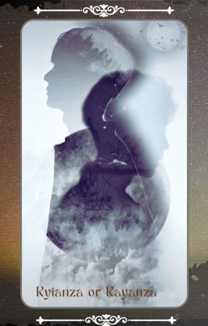

Rekomendasi
Drama: The Untamed
Cerita dimulai dari 16 tahun setelah hilangnya sang Tetua Yiling (夷陵老祖, Yà LÃng Lǎo Zǔ), Wei Wuxian, setelah penyerbuan oleh 4 sekte besar yang bersatu untuk mengalahkannya. Mo Xuanyu adalah keponakan dari pemimpin desa Mo yang dianggap gila dan dikucilkan oleh keluarganya. Karena rasa bencinya pada keluarga Mo, ia menggunakan sebuah ritual terlarang untuk memanggil Wei Wuxian untuk membalaskan dendamnya. Wei Wuxian dengan menggantikan posisi Mo Xuanyu pun memulai petualangan barunya. Satu persatu tokoh dari masa lalunya muncul kembali, termasuk Lan Wangji, sang Hanguang-Jun (含光君, Hánguāng-jūn), teman sekaligus musuhnya yang dahulu selalu menentang kultivasi iblisnya. Bersama dengan Lan Wangji, Wei Wuxian berusaha memecahkan misteri dari roh pedang yang telah membunuh banyak orang dan mengungkap dalang di balik semua itu. Dalam perjalanannya, masa lalu Wei Wuxian yang berperan besar dalam cerita juga diungkap. Wei Wuxian muda yang ceria dan bebas bersama dengan Lan Wangji yang dingin dan selalu taat pada aturan menemukan rahasia Sekte Lan yang selama ini disimpan di goa bawah air Sekte Lan, salah satu kepingan besi Yin yang dapat mengendalikan mayat. Sementara itu, Sekte Wen yang ambisius dan kejam juga berusaha untuk mengumpulkan keempat kepingan besi tersebut
Donghua: 100.000 Years of Refining Qi
100.000 tahun yang lalu, Sekte Tianlan menguasai dunia kultivasi, dan semua murid dari klan itu bangga dan tak terkalahkan. Hanya Xu Yang, murid pendiri sekte, yang berada pada tahap pemurnian Qi, untuk menerobos dan naik secepat mungkin, Xu Yang pergi ke pengasingan selama sepuluh ribu tahun. Ketika dia keluar dari pengasingan, dunia kultivasi telah menurun, dan hanya tiga atau lima murid Sekte Tianlan yang tersisa. Melihat sekte itu akan dimusnahkan, Xu Yang memukul mundur musuh yang kuat dan bersumpah untuk memimpin Sekte Tianlan kembali ke puncaknya! Ketika Sekte berkembang, kebenaran tentang kultivasi Xu Yang terungkap selangkah demi selangkah, dan misteri yang melintasi tiga alam manusia, iblis, dan abadi terungkap ke publik. Akankah dia menjadi dewa dengan satu pikiran, atau iblis dengan satu pikiran? Hidup dan mati dunia terletak di telapak tangan Xu Yang!
Novel: Transmigrasi: RAYANZA OR RYIANZA
Ryianza seorang pria dewasa berusia 25 thn Bertransmigrasi kejiwa seorang remaja SMA. Bagaimana sikap ryianza saat mengtahui raga yang ditempatinya memiliki nasib yang tidak jauh berbeda darinya? -Keluarga yg tidak mengakuinya! -Saudara yg membencinya! -Seluruh keluarga yg tidak mengharapkannya!